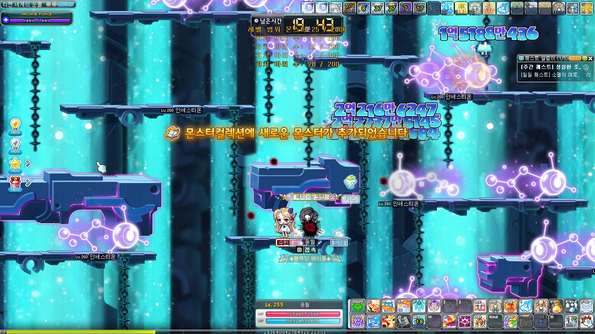

몬스터를 사냥하면 일정 확률로 컬렉션에 등록되는 메이플스토리의 대표적인 도감형 컨텐츠로 현재 총 1167마리의 몬스터를 등록할 수 있다.

몬스터가 등록되면 경쾌한 효과음과 함께 화면 중앙에 "몬스터컬렉션에 새로운 몬스터가 등록되었습니다"라는 문구가 뜬다.

시스템 메시지에서도 해당 몬스터의 이름과 함께 등록되었다는 문구를 볼 수 있다.

등록된 몬스터는 그림이 흑백에서 컬러로 바뀌며, 각 지역별로 한 줄을 채우면 탐험 상자를 받을 수 있다. 한 페이지를 채우면 메소 주머니, 고급 염색 쿠폰, 몬스터컬렉션 큐브 의자 등 다양한 보상을 받을 수 있다. 그중 단연 인기 있는 것은 몬스터컬렉션 큐브 의자이고, 나머지 보상은 사실 없어도 그만이다!